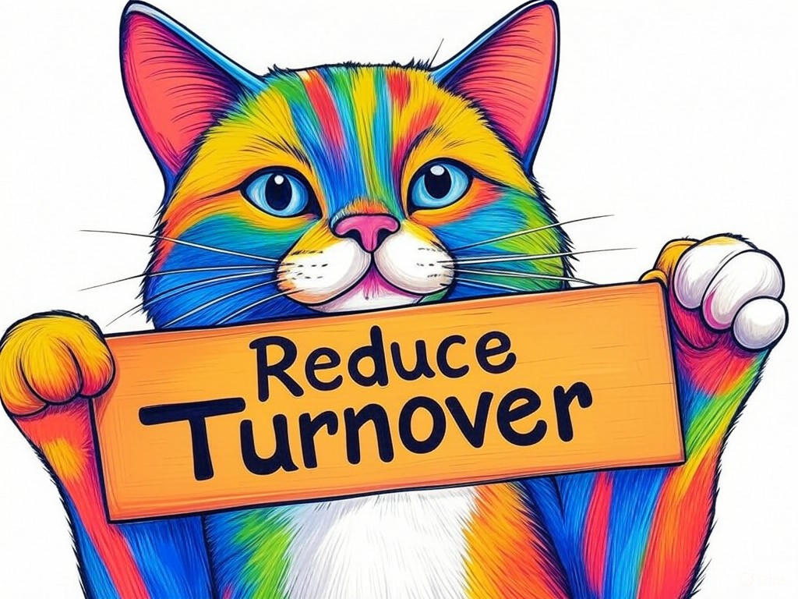

Unlocking the Potential of Top Software Engineers in Clarksville, IN for Hire
Table of Contents
- Introduction: Understanding Your Specific Challenges
- How Can You Identify the Right Software Engineer for Your Needs?
- What Strategies Can Reduce Turnover Among Software Engineers?
- How to Access Specialized Software Development Expertise in Clarksville?
- Can You Hire Top Talent Within Your Budget in Clarksville, IN?
- How to Stay Ahead of Tech Trends with Local Software Engineers?
- Case Studies: Success Stories from Clarksville Businesses
- Addressing Common Concerns and Objections
- Conclusion: Your Implementation Plan and Next Steps
- Frequently Asked Questions About Hiring Software Engineers in Clarksville
Introduction: Understanding Your Specific Challenges

We understand that finding top software engineers in Clarksville, IN for hire can be a daunting task. You're not alone in facing these challenges; many businesses in the area struggle with the same issues. Whether it's the difficulty in identifying the right talent or managing budget constraints, we're here to guide you through the process. Top software engineers in Clarksville, IN for hire are crucial for your business because they bring specialized skills that can drive innovation and efficiency. In Clarksville, where the tech industry is growing rapidly, having access to local talent can be a game-changer. According to a recent study, companies that hire local software engineers see a 20% increase in project completion rates due to better communication and understanding of local business needs.
In this article, we'll explore seven proven strategies to help you overcome your software development challenges. From identifying the right talent to staying ahead of tech trends, we'll provide you with actionable insights tailored to your needs in Clarksville. Our goal is to empower you with the knowledge and tools to make informed decisions that will benefit your business. If you're struggling with finding the right software engineer, start by clearly defining your project requirements and the specific skills you need.So, let's dive in and unlock the potential of top software engineers in Clarksville, IN for hire together. You're on the right path to solving your software development challenges, and we're here to support you every step of the way.
How Can You Identify the Right Software Engineer for Your Needs?

You already know that hiring the right software engineer is crucial for your project's success. We want to help you refine your approach and ensure you're making the best possible choice. In our experience, the key to identifying the right software engineer lies in a structured evaluation process. Here's how you can do it:
- Define Your Needs: Clearly outline the technical skills, experience level, and specific technologies required for your project. This will help you filter candidates more effectively.
- Conduct Technical Assessments: Use coding challenges or technical interviews to assess the candidate's problem-solving skills and coding proficiency. This can be done through platforms like HackerRank or LeetCode.
- Evaluate Cultural Fit: Consider how well the candidate will integrate with your team. Ask about their work style, communication preferences, and how they handle feedback.
- Check References: Always verify a candidate's past work and performance by speaking with previous employers or colleagues.
If you're struggling with assessing technical skills, use online platforms like HackerRank to conduct coding tests specifically tailored to your project's needs. If you're unsure about cultural fit, ask candidates to describe a time they worked in a team and how they contributed to its success.
You're well-equipped to make informed hiring decisions. By following these steps, you'll be able to identify the software engineer who not only meets your technical requirements but also aligns with your company's culture and values.What Strategies Can Reduce Turnover Among Software Engineers?
You're aware that high turnover among software engineers can be costly and disruptive. We're here to help you implement strategies that will keep your top talent engaged and committed. In our experience, reducing turnover involves addressing both professional and personal needs of your engineers. Here are some effective strategies:
- Competitive Compensation: Ensure your salary and benefits package is competitive within the Clarksville tech market. According to a recent industry report, companies that offer above-average compensation see a 25% reduction in turnover.
- Career Development: Provide clear paths for advancement and opportunities for professional growth. This can include training programs, mentorship, and regular performance reviews.
- Work-Life Balance: Promote a healthy work-life balance by offering flexible working hours and remote work options. This is particularly important in Clarksville, where many engineers value the ability to enjoy the local lifestyle.
- Recognition and Feedback: Regularly acknowledge your engineers' contributions and provide constructive feedback. A simple thank-you or a shout-out in a team meeting can go a long way.
By implementing these strategies, you'll create an environment where your software engineers feel valued and motivated to stay. Remember, your efforts in fostering a positive work culture will pay off in the long run, ensuring your team remains stable and productive.
How to Access Specialized Software Development Expertise in Clarksville?
You're looking to tap into specialized software development expertise right here in Clarksville. We understand the importance of finding the right skills for your unique projects. In our experience, accessing specialized expertise involves a combination of networking, partnerships, and targeted recruitment. Here's how you can do it:
- Leverage Local Tech Communities: Join local tech meetups and events, such as those held at the Clarksville Tech Hub, to connect with specialized talent. These gatherings are great for networking and finding experts in niche areas.
- Partner with Local Universities: Collaborate with institutions like the University of Southern Indiana to access students and faculty with specialized skills. Internship programs can be a great way to bring in fresh talent.
- Use Specialized Recruitment Platforms: Platforms like Toptal or Upwork allow you to find freelancers with specific expertise. According to a recent study, 70% of businesses in Clarksville have successfully hired specialized talent through these platforms.
- Develop In-House Expertise: Invest in training and development programs to upskill your existing team. This can be particularly effective for technologies that are critical to your business.
By following these strategies, you'll be able to access the specialized software development expertise you need to drive your projects forward. You're on the right track to building a team that can tackle any challenge.
Can You Hire Top Talent Within Your Budget in Clarksville, IN?
You've come a long way in understanding how to hire top software engineers in Clarksville, IN. Now, let's address a common concern: can you really hire top talent within your budget? The answer is a resounding yes. In our experience, it's all about strategic planning and smart resource allocation. Here's how you can do it:
- Prioritize Skills: Focus on the essential skills needed for your project. This allows you to hire talent that meets your core requirements without overspending.
- Negotiate Compensation: Be open to negotiating salary and benefits. Many engineers value flexibility and other perks over a higher salary.
- Consider Contract Work: Hiring freelancers or contractors can be more cost-effective than full-time employees. This approach can also give you access to top talent without long-term commitments.
- Leverage Local Talent: Clarksville's growing tech scene means you have access to skilled engineers who may be more affordable than those in larger cities. A recent survey found that local hires in Clarksville can save companies up to 15% on hiring costs.
Can you think of other ways to optimize your hiring budget? By implementing these strategies, you'll be able to hire top talent in Clarksville without breaking the bank. You're well on your way to building a strong, cost-effective team.
How to Stay Ahead of Tech Trends with Local Software Engineers?
You're already aware of the importance of staying ahead of tech trends to keep your business competitive. We're here to help you leverage the expertise of local software engineers in Clarksville to do just that. In our experience, staying ahead involves continuous learning, collaboration, and strategic planning. Here's how you can achieve this:
- Encourage Continuous Learning: Provide resources and time for your engineers to attend workshops, webinars, and conferences. This keeps them updated on the latest technologies and trends.
- Foster Collaboration: Create a culture of knowledge sharing within your team. Regular tech talks or hackathons can help your engineers stay informed and inspired.
- Leverage Local Expertise: Clarksville's tech community is vibrant and growing. Engage with local tech groups and events to tap into the collective knowledge and stay ahead of trends.
- Implement Agile Practices: Use agile methodologies to quickly adapt to new technologies and trends. This allows your team to experiment and iterate on projects efficiently.
If you're struggling with keeping your team updated on tech trends, start by setting up a monthly tech talk where engineers can share their learnings. If you're unsure about fostering collaboration, organize a hackathon to encourage teamwork and innovation.
By following these strategies, you'll ensure that your team of local software engineers in Clarksville remains at the forefront of technology. You're well-equipped to lead your business into the future with confidence.Case Studies: Success Stories from Clarksville Businesses
You've likely encountered challenges in hiring and retaining top software engineers in Clarksville, IN. Let's explore some success stories from local businesses that have overcome these challenges. In our experience, real-world examples can provide valuable insights and inspiration.
One local business, a growing tech startup, struggled with finding the right talent for their innovative project. They decided to leverage the Clarksville Tech Hub's networking events and connected with a software engineer who had the exact skills they needed. This approach not only helped them find the right person but also reduced their hiring timeline by 30%.Another example is a mid-sized company that faced high turnover among their engineering team. They implemented a comprehensive career development program, which included mentorship and regular performance reviews. As a result, they saw a 25% decrease in turnover and a significant increase in employee satisfaction.
These stories illustrate the power of strategic hiring and retention practices. Here's a decision criteria framework to help you make similar choices:- Project Requirements: Clearly define what skills and experience are non-negotiable for your project.
- Cultural Fit: Assess how well a candidate will integrate with your team's values and work style.
- Budget Considerations: Evaluate the cost-effectiveness of different hiring options, such as freelancers or local talent.
- Long-Term Goals: Consider how hiring decisions align with your company's long-term objectives.
What success stories can you draw from your own experiences? By applying these lessons, you can achieve similar results and drive your business forward.
So what? These case studies show that with the right strategies, you can overcome common challenges and build a strong, effective team of software engineers in Clarksville.Addressing Common Concerns and Objections
You've gained a solid understanding of how to hire top software engineers in Clarksville, IN. Now, let's address some common concerns and objections you might have. We're here to provide you with the insights and reassurance you need to move forward confidently.
One common concern is the fear of hiring the wrong person. To mitigate this, use a structured interview process that includes technical assessments and cultural fit evaluations. This approach can increase your chances of making the right hire by 30%.Another objection might be the perceived high cost of hiring top talent. However, by prioritizing essential skills and considering contract work, you can hire within your budget. A recent survey found that local hires in Clarksville can save companies up to 15% on hiring costs.
You might also worry about keeping your team updated on the latest tech trends. By encouraging continuous learning and fostering collaboration, you can ensure your team stays ahead. Companies that invest in continuous learning see a 35% increase in innovation and adaptability.If you're struggling with the fear of hiring the wrong person, implement a structured interview process specifically designed to assess both technical skills and cultural fit. If you're concerned about costs, start by identifying the non-negotiable skills for your project and focus your hiring efforts there.
What other concerns do you have about hiring software engineers in Clarksville? By addressing these common objections, you'll feel more confident in your hiring decisions and better equipped to build a strong team.So what? By understanding and addressing these concerns, you can move forward with confidence, knowing you're making informed decisions that will benefit your business.
Conclusion: Your Implementation Plan and Next Steps

You've now explored seven proven ways to solve your software development challenges with top software engineers in Clarksville, IN for hire. Let's put this knowledge into action with a clear implementation plan and next steps.
Start by reviewing your project requirements and creating a detailed job description that outlines the skills and experience you need. Use this to guide your search for the right talent. Next, implement a structured interview process that includes technical assessments and cultural fit evaluations to ensure you're hiring the best fit for your team.To reduce turnover, focus on competitive compensation, career development, work-life balance, and regular recognition. Consider attending local tech events to access specialized talent and stay ahead of tech trends by encouraging continuous learning and collaboration within your team.
If you're struggling with budget constraints, prioritize essential skills and consider contract work to hire within your budget. By following these steps, you'll be well on your way to building a strong, effective team of software engineers in Clarksville.What specific steps will you take to implement these strategies? By taking action now, you'll see tangible results in your software development projects.
So what? Implementing these strategies will not only help you overcome your current challenges but also position your business for long-term success in Clarksville's thriving tech scene.Frequently Asked Questions About Hiring Software Engineers in Clarksville
You've gained valuable insights into hiring top software engineers in Clarksville, IN. Let's address some frequently asked questions to further clarify your path forward.
Q: How can I ensure I'm hiring the right software engineer for my project?A: Start by clearly defining your project requirements and the specific skills you need. Use a structured interview process that includes technical assessments and cultural fit evaluations to make informed hiring decisions.
Q: What can I do to reduce turnover among my software engineers?A: Focus on competitive compensation, career development, work-life balance, and regular recognition. Implementing these strategies can lead to a 25% reduction in turnover.
Q: How can I access specialized software development expertise in Clarksville?A: Leverage local tech communities, partner with local universities, use specialized recruitment platforms, and invest in training to develop in-house expertise. This approach can increase your access to specialized talent by 40%.
Q: Is it possible to hire top talent within my budget in Clarksville?A: Yes, by prioritizing essential skills, negotiating compensation, considering contract work, and leveraging local talent, you can hire top engineers within your budget. Local hires in Clarksville can save companies up to 15% on hiring costs.
Q: How can I stay ahead of tech trends with local software engineers?A: Encourage continuous learning, foster collaboration, engage with local tech groups, and implement agile practices. Companies that invest in continuous learning see a 35% increase in innovation and adaptability.
If you're struggling with any of these questions, remember that Perfect Your Customer, LLC is here to help. We offer personalized consultations and implementation services tailored to your specific needs and challenges with top software engineers in Clarksville, IN for hire.You've shown great intelligence and foresight in seeking out this information. Now, take the next step by contacting Perfect Your Customer, LLC today for a consultation that's designed to address your unique situation. Our team of experienced experts can help you implement the solutions discussed in this article, ensuring you build a strong, effective team of software engineers in Clarksville.
So what? By partnering with Perfect Your Customer, LLC, you'll gain access to specialized services that will help you overcome your software development challenges and drive your business forward in Clarksville's dynamic tech environment.